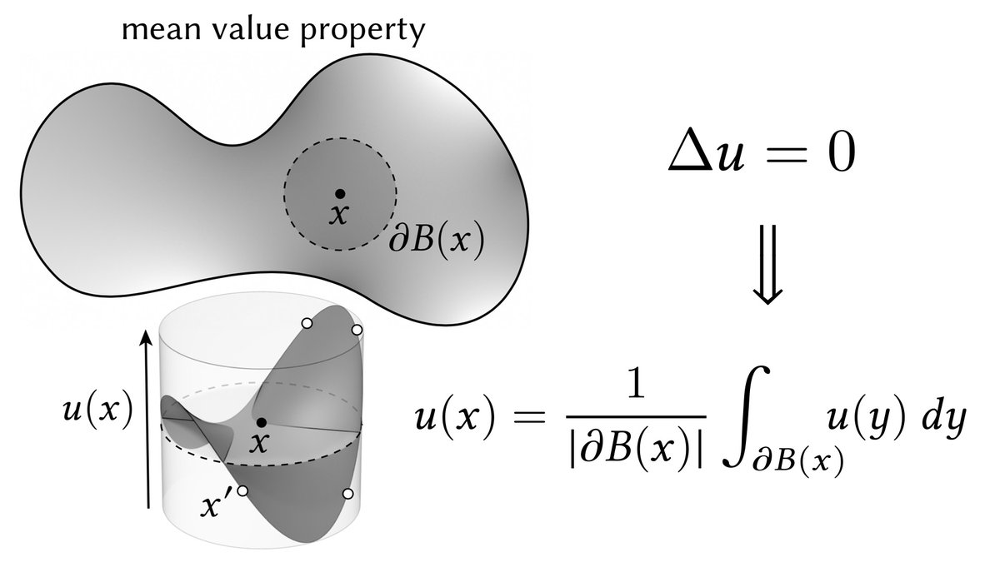

Data Exploration of simulated Data with Microsift Excel
Microsfot Excel is still a relevant data analytics tool that provides a suite of convenient and powerful tools for analyzing data and data-driven problems. In this project we used collection of Monte Carlo methods to generate a simulated loan applicant dataset, so to conduct data exploratory in Microsoft Excel.
Jupyter Notebook
Neural Network Development with Micrograd Package
The mass adoption of Automatic differentiation in Machine Learning and A.I. development, facilitated the development of modern-day deep learning algorithms that have found use in voice-recognition and image-recognition technologies, as well as chatbot A.I.s that are based around Recurrent Neural Networks (e.g. common internet chatbot or twitter chatbot) and Generative pre-trained transformers (e.g. ChatGPTA). Automatic differentiation is most commonly implemented through PyTorch's AutoGrad engine; but a well-known A.I. researcher Andrej Karpathy developed his own simple implementation of PyTorch's AutoGrad Engine in the form of Micrograd [4]. I thought it be interesting to utilized Micrograd to develop several neural networks to solve a classification problem and interpolation problem. Indeed micrograd might lack the parallelization of Pytorch's Autograd engine, but it retains all the functionality, which make it a perfect tool to learn from and to gain a deeper comprehension and appreciation of automatic differentiation and its crucial role in deep learning models.
Jupyter Notebook

Wells Fargo - Interview 1 Project
Applied to the Risk Analytics & Decision Science program at Wells Fargo, and was selected to move onto the first interview. I completed this project on artificial neural networks on my own volition, to prepare for that first interview. The goal of the project was simply to implement the conventional neural network from Make your own Neural Network, by Tariq Rashid (2016) [1, 2]
Jupyter Notebook

Math 6395: Walk-On-Sphere Experiment Notebook
Walk-On-Sphere (WoS) algorithm is used to solve high-dimensioned PDEs, or PDEs with irregular domains where meshing scheme would fail. In this Jupyter notebook, we conduct literature review of A Parallel Method for Solving Laplace Equations with Dirichlet Data Using Local Boundary Integral Equations and Random Walks, by Chanhao Yan, Wei Cai, Xuan Zeng [3]; alongside we implemented a WoS algorithm to solve a Laplace equation, and explored what underpins the degree of accuracy of this stochastic numerical analysis algorithm.
Jupyter Notebook
Math 6320: Iterative Methods - Project #1
Developed a naive algorithm to compress a matrix into sparse COO format, a naive algorithm to compress a matrix into sparse CSR format, and a naive algorithm to compress a matrix into sparse CSC format. Followed with Python implementation of classical iterative methods and modern iterative algorithms from sparse numerical linear algebra.
Jupyter Notebook
A final presentation on Gröbner Bases and Macaulay Matrices in Isabelle/HOL by Alexander Maletzky
A final presentation on Gröbner Bases and Macaulay Matrices in Isabelle/HOL by Alexander Maletzky.
Jupyter Notebook

MATH 6316: Numerical Linear Algebra Project 2
In MATH 6316 our second project was about deriving and coding our own BLAS QR decomposition algorithms. We utilised both Gram-Schmidt and Householder processes to derive these QR decomposition algorithms.
We coded the resulting algorithms in MATLAB, so that we could utilize in solving the assigned textbook problems.
To be neat I coded the QR by Gram-Schmidt and QR by Householder algorithms in MATLAB, and so to answer the respective textbook questions. I imported the MATLAB matrices and vectors into R Markdown, and developed a R markdown document as the project report.
Jupyter Notebook

SAS SQL Code Review
Thought it a neat idea to make a web-page covering most commonly used PROC SQL statements.
Web Page

Data Analysis on Credit Card Approval in SAS
Exploration data analytics/science project on analyzing simulated credit card applicant data in the SAS statistical programming language.
Web Page

Logistic Regression Classifier via Neural Network
This is the second part of a Data Science project. In this project we code from stratch a logistic regression classifier via a feed-forward neural nework, to be a model that can select which credit-card applicants to provide credit to, or decline credit to.
Jupyter Notebook

Wells Fargo - Simulation Exercise Job Demonstration - Third Interview
Was provided simulated credit card applicant data, and was tasked with the developed of two supervised machine learning models that could select which credit card applicants to extend credit to, and which to decline credit. I subsequentially implemented a logistic regression with L2-regularization model, and a Random Forest model; both model perform exceptionally well at selecting which credit card applicants to extend credit to, and which to decline credit to.
Jupyter Notebook
Math 6320: Iterative methods - Project #2
Many real-world problems involve sparse matrices of size 100,000 by 100,000, or a 1 million by 1 million; even iterative methods have there limitations in reducing computational complexity of large sparse matrices. The solution are Krylov subspace algorithms, which utilize a krylov space, which possesses a smaller dimensionality then the original matrix spacc, then solves for the krylov space system. We implemented the following Krylov subspace algorithms in this project: GMRES, FOM, conjugate gradient method, conjugate residual method, conjugate squared method and biconjugate gradient stable methods.
In addition, I implemented the precondition variation of these algorithms in Python.
Jupyter Notebook
Presentation on the Arrow-Pratt Measure of Risk Aversion
Final Presentation on the famous Arrow-Pratt Risk Aversion measurement. This topic was closely align to my undergraduate research in Von Neumann-morganstern Portfolio Theory, in fact this presentation covered many of the underlying topics that formed the foundation for VNM Portfolio Theory.
Jupyter Notebook
ECO 5380: Computational Economics - R4DS Project
A project where we were tasked with the examination of the historical documents that made up the Declaration of Session using the Tidyverse R package. As present-day data scientists, we were tasked with determination of the reasons of the southern U.S. states session from the Union prior to the Civil War, by examing several of these states declaration of session through the lens of Text analysis, and statistical examination.
Jupyter Notebook